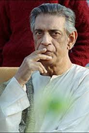

Satyajit Ray
Satyajit Ray (Bengali: ['??t?od?it 'rai?] (About this soundlisten); 2 May 1921 � 23 April 1992) was an Indian Bengali filmmaker, screenwriter, graphic artist, music composer and author, widely regarded as one of the greatest filmmakers of the 20th century.[2][3][4] Ray was born in Calcutta into a Bengali Pandit family which was prominent in the field of arts and literature. Starting his career as a commercial artist, Ray was drawn into independent filmmaking after meeting French filmmaker Jean Renoir and viewing Vittorio De Sica's Italian neorealist film Bicycle Thieves (1948) during a visit to London.

Ray directed 36 films, including feature films, documentaries and shorts. He was also a fiction writer, publisher, illustrator, calligrapher, music composer, graphic designer and film critic. He authored several short stories and novels, meant primarily for young children and teenagers. Feluda, the sleuth, and Professor Shonku, the scientist in his science fiction stories, are popular fictional characters created by him. He was awarded an honorary degree by Oxford University.
- Pather Panchali
- Charulatha
Ray's first film, Pather Panchali (1955), won eleven international prizes, including the inaugural Best Human Document award at the 1956 Cannes Film Festival. This film, along with Aparajito (1956) and Apur Sansar (The World of Apu) (1959), form The Apu Trilogy. Ray did the scripting, casting, scoring, and editing, and designed his own credit titles and publicity material. Ray received many major awards in his career, including 32 Indian National Film Awards, a Golden Lion, a Golden Bear, 2 Silver Bears, a number of additional awards at international film festivals and award ceremonies, and an Academy Honorary Award in 1992. The Government of India honored him with the Bharat Ratna, its highest civilian award, in 1992. Ray had received all the honourable Indian awards, including Bharat Ratna and Padma Awards.